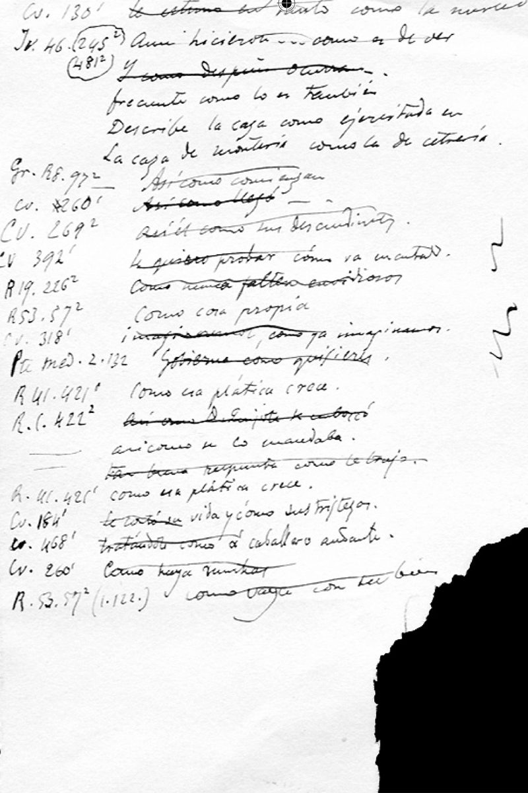

Z en América. Guillermo Guitarte dice que hacia 1825 en Bogotá se hacía la distinción de s y z, y que a mediados de ese siglo, Julio Arboleda despertaba entusiasmo por pronunciar la z y tenía imitadores de su pronunciación española y puso de moda pronunciar la z en Bogotá. Este respeto de los hablantes bogotanos por la z debió durar mucho tiempo más. Cuervo señala en la primera edición de sus Apuntaciones el prestigio de la z en Bogotá, como puede verse en esta cita: “Otro de los medios de ennoblecerse excogitados por nuestros paisanos es el de cambiar en los apellidos la s en z, la b en v: así Cortés, Montañés, Chaves, Losada, Mesa, Quesada, Córdoba, son para muchos Cortez, Montañez, Chávez, Lozada, Meza, Quezada, Córdova”[1]. Al respecto Guitarte dice que se trata, desde luego, de ultracorrecciones que revelan el deseo de acogerse al prestigio de la z (y de la v).
Zamarra, Juan Esteban. Ante la cita biográfica de Rufino José: “Mientras que perfecciona a Antonio en la Jurisprudencia, enseña a Rufino los elementos de la geografía y gramática y da lecciones de historia y literatura a Ángel y Nicolás; completan la enseñanza de estos el señor Bergeron, notable profesor francés llevado para el Colegio militar, el señor Touzet, a cuyos esfuerzos debe tanto en nuestro país la propagación del estudio de la lengua francesa y de la contabilidad mercantil, y don Juan Esteban Zamarra, primero, y don Manuel María Medina después, jóvenes ambos de variados talentos e instrucción”[2], Emilio Robledo decía: “Séame permitido destacar de entre los nombres citados el del doctor Juan Esteban Zamarra, para congratularme una vez más con la legendaria y noble Santafé de Antioquia, cuna de este ilustre jurisconsulto, por la participación que pudo caberle en la iniciación del más alto exponente de nuestra cultura idiomática”[3].
Xuleta, Eduardo. Nació en Remedios (Antioquia). Se doctoró en Medicina y fue secretario de la legación de Colombia en Madrid, en París y en Bruselas. Fue corresponsal y amigo de Cuervo. Rufino José pensó seriamente en pasar los últimos días de su vida en Medellín como se advierte en la carta de Zuleta de abril de 1902: “Ahora le mostraré el lado favorable de su viaje. En primer lugar, U., se curaría de su neurastenia con el cambio de zona únicamente. Particularmente, me proporcionaría a mí un placer muy grande en que U., estuviera aquí y poderle servir en algo. Los miembros de la familia serían sus servidores y amigos sinceros. Medellín entero lo recibiría a U., con los brazos abiertos”[4].
* * *
[1] Cuervo, Obras, 1987, ii, § 464, 521.
[2] Anuario, xi, 207.
[3] Anuario, xi, 207.
[4] aec, v, 259-260.

Fotografía [Anónima],
Rufino Cuervo de 26 años,
Biblioteca Luis Ángel Arango.